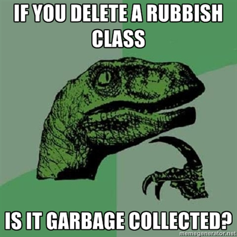

- Emily Soldal / @noia / G+
You can navigate with →, ↓ or space.
Also esc gives an exposé mode (that might be quite slow).
Started as Google Collections.
Is the Creme de la Creme of Googles internal libraries!
Guava is used by millions of users and has an incredibly low use-fault ratio!
Very activly developed with a focus on usability and performance.
Apache Licence 2.0!
why aren't you using this already?!
As of r12...
When you see r12, think Guava 12.0

public Car(Engine engine) {
this.engine = checkNotNull(engine); // NPE
}
public void drive(double speed) {
checkArgument(speed > 0.0, "speed (%s) must be positive", speed); // IAE
checkState(engine.isRunning(), "engine must be running"); // ISE
...
}